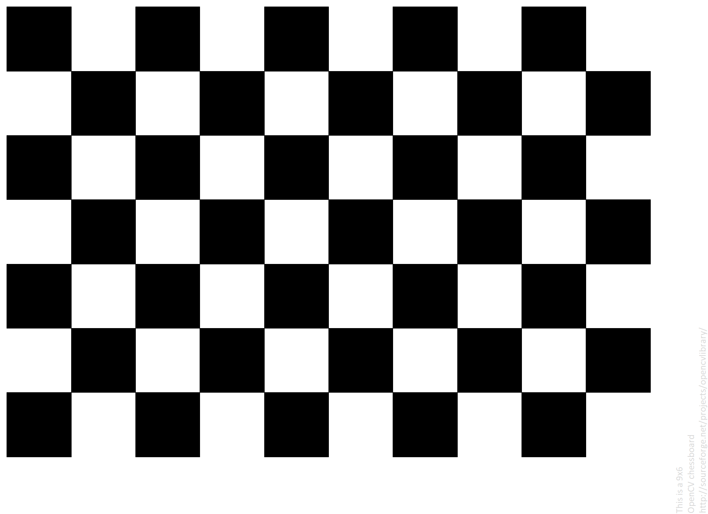

Hold this screen
flat
in front of the webcam (9 × 6 inner corners). Turn the brightness up and avoid reflections. Measure one square
on this screen
with a ruler and type it into the studio.
Full screen